fireworks
JSML Library
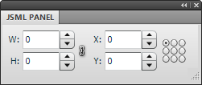
For you Fireworks developers out there who like to sling JavaScript but aren't down with Flash, or just don't want to deal with the overhead of building a whole SWF for a simple panel or dialog, the JSML Panel and Dialog Library can help. JavaScript Markup Language (JSML) is a combination of JS and Flex 3 that lets you create a Flash panel or dialog using just JavaScript, so you can build a fully functional Fireworks UI for your commands with nothing more than a text editor.
The JSML library was actually used to implement some of the panels and dialogs offered on this site:
You can install these extensions to see some more complex real-world examples. The Tables panel, in particular, uses the library to its full extent. To see the code, just open the extension's .js file from the Commands Panel folder, e.g. Tables.js.
Contents
- Installation
- Registering a panel
- Opening a dialog
- Creating the panel UI
- Creating an element hierarchy
- Styling elements
- Styling dialogs
- Using external images
- Returning values from dialogs
- Creating simple dialogs
- Using data providers
- Handling events
- Updating the panel UI
- Handling Fireworks events
- Building up more complex user interfaces
- Technical details
Installation
After installing the JSML Library extension, you should have two files in the Adobe Fireworks/Configuration/Command Panels folder: JSML Panel.swf and JSML Panel.js. You'll need to restart Fireworks to get the new panel to appear in the Window menu. There will also be a JSML Panel folder, which contains two images used by the example code. It's not necessary to include these images in your panels.
The JSML Panel.js file is thoroughly documented and shows how a basic panel can be quickly specified using JavaScript. You can jump in and play around with that, or read on for more details. For any of the examples below, you can copy and paste the code into the JSML Panel.js file, click the panel and then press F5 to refresh it with the changed code.
In addition to the panel library, the extension will also install a number of files in Adobe Fireworks/Configuration/Commands/JSML Dialog. There are example files showing how to create dialogs using JSML, as well as the .js files that need to be included with any extension using the library.
Many of the examples below show JSML being used in panels, but almost exactly the same code can be used in a dialog.
Registering a panel
To build a new panel with the library, make a copy of the JSML Panel.swf and JSML Panel.js files in the Command Panels folder, and give the copies the same base name. For example, if you want to create a panel called My Panel, the folder hierarchy should look like:
Adobe Fireworks/
Configuration/
Command Panels/
My Panel.swf
My Panel.js
After creating the copies, you'll need to restart Fireworks for the panel to appear in the Window menu.
The SWF file contains all the logic for rendering the panel. You won't modify this file, but each panel you create needs its own copy of it, since Fireworks scans the Command Panels folder for SWFs and displays a menu item for each one it finds.
When the SWF is first opened, it will look in its folder for a .js file with the same name. If it doesn't find the file, the panel will be blank.
To specify the structure of the panel, your .js file needs to call fwlib.panel.register() with a single object containing the panel's properties:
fwlib.panel.register({});
This example doesn't display anything, but it's the bare minimum code for building a panel. You don't need to specify the name of the SWF when calling register since the SWF executes your .js file and it knows its own filename. Also note that the fwlib.panel API is automatically loaded by the SWF; your JavaScript code doesn't need to do anything to make the API available.
Opening a dialog
Opening a JSML dialog works somewhat differently than registering a panel. Since the panel SWF will load before your .js code, it can instantiate the libraries needed for creating the panel. In a dialog, on the other hand, your .jsf code runs before the SWF loads, so you're responsible for loading the dialog library.
First, set up your command directory like this:
Adobe Fireworks/
Configuration/
Commands/
My Commands/
lib/
dojo/
has.js
json.js
fwlib/
dialog-swfs/
Dialog [250x250].swf
...
JSMLDialog.swf
dialog.js
simple-dialog.js
fwrequire.js
require.js
My Command 1.jsf
My Command 2.jsf
As you can see, there are a number of library files needed to create a dialog. You should include all of them when distributing your extension.
In your .jsf file, you must include this boilerplate code at the top:
if (typeof require != "function" || !require.version) {
fw.runScript(fw.currentScriptDir + "/lib/fwrequire.js"); }
This ensures that the FWRequireJS module loader has been instantiated, which you will then use to load the JSML dialog library. To do so, call require(), a global function that is created by FWRequireJS:
require([
"fwlib/dialog"
], function(
dialog)
{
...
});
The initial array parameter lists the modules that must be loaded before your function runs. In this case, we just need the dialog module, which is located in the fwlib sub-directory of the lib/ directory. See the FWRequireJS documentation for other ways to define and require modules.
Once the module is loaded, it is passed to the callback function that is the second parameter to require(). This function should have one parameter for each module that is required in the array of module names and in exactly the same order. You can give the module any name you like, but it's called dialog in the examples for clarity.
To open a dialog, simply call dialog.open() with an object containing the JSML description of your interface:
require([
"fwlib/dialog"
], function(
dialog)
{
var result = dialog.open({});
});
This will open a large, empty dialog with OK and Cancel buttons. The return value from dialog.open() is null if the user canceled the dialog, or else an object containing the current values of the elements if the user clicked OK. See the Returning values from dialogs section for more details.
Note that in most of the following examples, the boilerplate code and the call to require() are not shown, but they are still necessary for your dialog to work.
Creating the UI
Empty panels and dialogs aren't very interesting, of course, so here's an example that includes an actual clickable Flex control:
fwlib.panel.register({
children: [
{ Button: {
label: "Do It"
} }
]
});
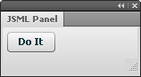
When you change the .js file, the panel won't automatically update. You will need to close and reopen the panel or just click inside it and then press F5, which immediately reloads the JavaScript. This makes working on a panel as iterative as refreshing a webpage in a browser.
Here is the same example in a dialog:
if (typeof require != "function" || !require.version) {
fw.runScript(fw.currentScriptDir + "/lib/fwrequire.js"); }
require([
"fwlib/dialog"
], function(
dialog)
{
dialog.open({
children: [
{ Button: {
label: "Do It"
} }
]
});
});
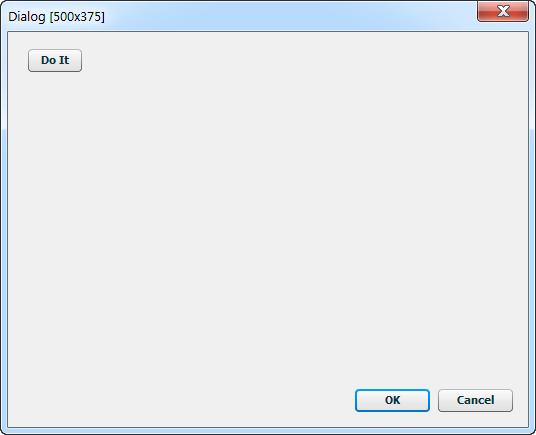
The interface's child elements are included in its children array. Currently, the following Flex 3 classes are supported:
Each element is specified with an object that has a single attribute, the name of which identifies the Flex element class, such as Button. The value of this attribute is another object, which contains the element's properties. For instance, { Button: {} } would create a button with no label -- not very useful, but it highlights the inner and outer object structure. You'd specify the button's label as an attribute on the inner object: { Button: { label: "My Button" } }. When closing an element object, don't forget the double braces. Your script won't run at all if you miss one.
A more complicated example using a NumericStepper control looks like:
fwlib.panel.register({
children: [
{ NumericStepper: {
name: "XValue",
value: 10,
stepSize: 1,
maximum: 100000,
minimum: -100000,
toolTip: "Pixels to move horizontally"
} },
{ Button: {
label: "Move"
} }
]
});
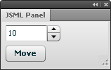
Although you don't need to know ActionScript to use the fwlib.panel library, you will need to reference the Flex 3 docs for details on the properties and styles that each element supports: http://help.adobe.com/en_US/FlashPlatform/reference/actionscript/3/
In this documentation, ignore the MXML syntax and refer instead to the Public Properties section for each class. In MXML, all the property values are specified with strings, but with the JSML library, you'll need to set the properties to values of the appropriate type. In the example above, for instance, you'd say stepSize="1" in MXML, but since that property requires a number, you'd use stepSize: 1 when specifying it with JavaScript.
Note that not every property will necessarily be useful in a panel or dialog, since you can't script the elements using ActionScript and features like data binding aren't supported. But most of the basic properties and styles should behave as described in the documentation.
To size an element as a percentage of its container, use the percentWidth and percentHeight properties rather than width and height. Setting width to a string like "100%" won't work.
Also note that you can ignore the documentation for the newer Flex 4 "spark" components. The JSML Panel library was built with Flex 3 "mx" components.
Creating an element hierarchy
For container types, like HBox and Form, you add child elements via their children array:
fwlib.panel.register({
children: [
{ HBox: {
children: [
{ Label: {
text: "X:"
} },
{ NumericStepper: {
name: "XValue",
value: 10,
stepSize: 1,
maximum: 100000,
minimum: -100000,
toolTip: "Pixels to move horizontally"
} }
]
} },
{ HBox: {
children: [
{ Label: {
text: "Y:"
} },
{ NumericStepper: {
name: "YValue",
value: 10,
stepSize: 1,
maximum: 100000,
minimum: -100000,
toolTip: "Pixels to move vertically"
} }
]
} }
]
});
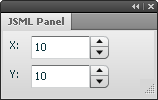
In this example, the HBox arranges its children, a Label and a NumericStepper, in a horizontal layout. The two HBox elements are still stacked vertically.
Of course, these child elements can have their own children, and so on. Remember that even if a container has only one child, the child still needs to be contained within an array.
Styling elements
Most Flex elements also support various styles, like fontSize. These need to be specified on a style: {...} property, rather than directly on the inner properties object.
fwlib.panel.register({
children: [
{ Label: {
text: "This is really big, red text.",
style: {
fontWeight: "bold",
fontStyle: "italic",
fontSize: 18,
color: "0xff0000"
}
} }
]
});
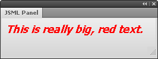
Unlike the pseudo-CSS markup supported in MXML files, in JSML, you must use the camelCase names for the style properties. color values are also not specified with CSS color strings but rather with hex values, either as a string, like "0xff0000", or a number, like 0xff0000.
In addition to tweaking the styles on individual elements, you can also specify global styles on a css property on the panel object.
fwlib.panel.register({
css: {
"Label": {
fontWeight: "bold",
fontStyle: "italic",
fontSize: 18,
color: "0xff0000"
}
},
children: [
{ Label: {
text: "This is really big, red text."
} },
{ Label: {
text: "And here's some more!"
} }
]
});
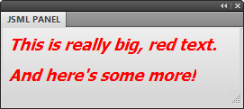
In the example above, the default style for Label elements is specified with the Label selector in the css property. This changes the appearance of all Label elements in the panel.
See the JSML Panel.js file for more examples of using styles.
Styling dialogs
In addition to the css and style properties described above, there are a number of properties that can be set on the top-level JSML object to control how dialogs look and behave:
- size
- A string specifying the size of the dialog, in pixels. See the next section for details.
- title
-
A string that's shown at the top part of the Flex
Panel, below the dialog title bar. Unfortunately, there's no way to change the actual title bar at runtime, so it'll always show the name of the SWF file that's loaded, such as "Dialog [300x250]".However, it is possible to rename the SWF to the name of your command. For instance, if you wanted a 300x250 dialog, you could rename the
Dialog [300x250].swffile insidelib/fwlib/dialog-swfstoMy Dialog.swf. Then pass"My Dialog"as the title string. In that case, "My Dialog" would appear as the actual title of the dialog, and that would also appear as the title of the Flex panel. The next option can change the Flex panel's string in that scenario. - subtitle
- A string that is shown at the top of the Flex
Panelelement when thetitlestring matches the name of the SWF. In the example above, you might specify"Choose an option below"as thesubtitlestring. - showTitle
- A Boolean that controls whether the title area is shown. Set this to
falseto hide the title completely. You can also set thetitleproperty to""to hide the title area. - confirmButton
- A string containing the
nameof the button element that plays the role of the OK button. If you use the default OK and Cancel buttons, this property does not need to be set. - dismissButton
- A string containing the
nameof the button element that plays the role of the Cancel button. If you use the default OK and Cancel buttons, this property does not need to be set. - buttons
- An array containing custom names for the default OK and Cancel buttons. See the Customizing dialog buttons section for details.
- defaultButtons
- A Boolean indicating whether default OK and Cancel buttons should be created at the bottom of the dialog. Set this to
falseif you want to create the buttons yourself. - root
- A JSML element that replaces the
Panelas the root of your dialog hierarchy. See the Customizing the root element in a dialog section for details.
Sizing dialogs
To specify a size for the dialog, set the size property of the dialog object to one of the following strings:
225x125 250x200 300x250 350x350 400x300 225x150 250x250 300x300 350x375 400x350 225x175 275x175 300x325 375x250 400x375 225x200 275x200 300x350 375x300 450x275 225x225 275x250 300x375 375x325 450x300 250x125 275x275 350x250 375x350 450x350 250x150 300x175 350x300 375x375 450x375 250x175 300x200 350x325 400x275 500x375
For example:
dialog.open({
title: "My First Dialog",
size: "300x200"
});
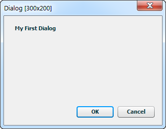
This opens an empty dialog that's 300px wide and 200px tall. Due to a limitation in how Fireworks opens Flash dialogs, it's not possible to support arbitrary sizes. But it's easy to add new fixed sizes to this list, so let me know which other sizes would be useful. The maximum size of a Flash dialog in Fireworks is 500x375. dialog.open() will default to 500x375 if you don't specify a size.
Each specific size corresponds to a SWF file in lib/fwlib/dialog-swfs. The SWFs are just shells that specify the size of the dialog and then load the JSMLDialog.swf file, which contains the actual logic for creating Flex elements out of JSML. When you distribute your extension, you only need to include the SWF files for the dialog sizes that you actually use. So if you have just one 300x200 dialog, you would need to include the Dialog [300x200].swf and JSMLDialog.swf files in the dialog-swfs directory.
Customizing dialog buttons
By default, 75px-wide OK and Cancel buttons are automatically created if you don't include a ControlBar element at the bottom of the Panel. The order of the buttons is reversed when the dialog is shown on a Mac.
To change the labels of these two buttons, you can set the buttons property to an array of strings. The first item is the label for the equivalent of the OK button, the second is for the Cancel button:
dialog.open({
buttons: ["Do It", "Don't Do It", 90],
size: "250x125"
});
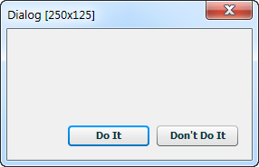
The optional third item in the array is a number that specifies the width of both buttons. If you want the buttons to automatically resize based on the widths of their labels, set the third item to 0.
If you want even more control over the buttons, you can create your own ControlBar element, which will dock at the bottom of the Panel element that contains the dialog's other controls. It should be the last element of the dialog's children array:
dialog.open({
title: "Yoda says:",
size: "225x125",
confirmButton: "DoBtn",
dismissButton: "DoNotBtn",
children: [
{ Label: { text: "There is no try." } },
{ ControlBar: {
children: [
{ Button: {
name: "DoBtn",
label: "Do",
width: 75
} },
{ Button: {
name: "DoNotBtn",
label: "Do Not",
width: 75
} }
]
} }
]
});
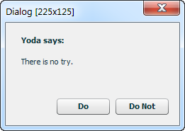
Note the confirmButton and dismissButton properties in the JSML above. If those were not set to the button names, clicking them would have no effect.
By default, the buttons will be right-aligned in the ControlBar, but you can set the horizontalAlign style to override that. If you want the left-to-right order of the buttons to be different on Mac vs. Windows, you will need to make that change in your code.
If you don't any ControlBar at all (perhaps you want the OK and Cancel buttons aligned vertically on the right), then you must set the defaultButtons property to false. If the dialog library doesn't see a ControlBar element, it will add one automatically unless you tell it not to.
Customizing the root element in a dialog
By default, the elements in the children array on the JSML object are added as children of a Panel element that takes up the entire area of the dialog. This is generally useful, as it provides a place for showing a title and an easy way of showing buttons at the bottom of the dialog. However, if you want to take full control of the dialog's layout, you can specify a different root element in the root property of the JSML:
dialog.open({
size: "225x150",
confirmButton: "FWBtn",
root: { HBox: {
style: {
paddingTop: 10,
paddingLeft: 10,
paddingRight: 10,
paddingBottom: 10
},
children: [
{ Image: {
source: "http://blogs.adobe.com/fireworks/files/fireworks/fwicon.jpg",
width: 100,
height: 100
} },
{ Button: {
name: "FWBtn",
label: "Fireworks!"
} }
]
} }
});
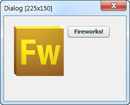
When using the root property, you must put all of the dialog controls in the root element's children array, as the children property on the top-level of the JSML will be ignored.
Styling the dialog's Panel element
The Panel that contains all the elements in a dialog has some default styles applied to it, which you can override by defining .DialogPanel and .DialogTitle styles:
dialog.open({
title: "This is red",
size: "225x125",
css: {
".DialogTitle": {
color: 0xff0000
}
},
children: [
{ Label: { text: "This is not." } }
]
});
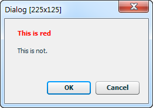
Using external images
At some point, you'll likely want to include an icon or image in your panel or dialog. The Image element can be used to display an image from either the local file system or anywhere on the internet. For instance, this code will display a Fireworks logo in the panel:
fwlib.panel.register({
children: [
{ Image: {
source: "http://blogs.adobe.com/fireworks/fwicon.jpg"
} }
]
});
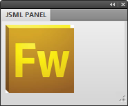
Local images in a panel
More commonly, the images will be installed with your panel on the user's machine. To reference these images, use a path relative to your panel's JavaScript file. For example, let's say you have the following file structure in the Fireworks folder:
Adobe Fireworks/
Configuration/
Command Panels/
JSML Panel.swf
JSML Panel.js
JSML Panel/
add-icon.png
delete-icon.png
These local images can then be displayed on some button controls by setting their icon style:
fwlib.panel.register({
children: [
{ HBox: {
children: [
{ Button: {
label: "Add",
style: {
icon: "JSML Panel/add-icon.png"
}
} },
{ Button: {
label: "Delete",
style: {
icon: "JSML Panel/delete-icon.png"
}
} }
]
} },
]
});
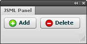
Note that the folder you use to store the image files doesn't have to have the same name as the panel. It can have any name you like.
Local images in a dialog
Paths to local images in dialogs are also relative to the SWF file, but since that file is several directories deep, you will probably want to go up a couple of directories. Imagine you have this directory structure:
Adobe Fireworks/
Configuration/
Commands/
My Commands/
lib/
dojo/
has.js
json.js
fwlib/
dialog-swfs/
Dialog [225x125].swf
...
JSMLDialog.swf
dialog.js
img/
add-icon.png
delete-icon.png
fwrequire.js
require.js
My Command 1.jsf
My Command 2.jsf
The relative paths to the images will be up two directories and back down into the img/ directory:
dialog.open({
size: "225x125",
children: [
{ HBox: {
children: [
{ Button: {
label: "Add",
style: {
icon: "../../img/add-icon.png"
}
} },
{ Button: {
label: "Delete",
style: {
icon: "../../img/delete-icon.png"
}
} }
]
} }
]
});
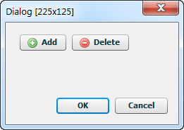
Button element styles
Button elements also support a number of other icon styles:
- disabledIcon
- downIcon
- icon
- overIcon
- selectedDisabledIcon
- selectedDownIcon
- selectedOverIcon
- selectedUpIcon
- upIcon
Note that when you use external icons with controls in a TabNavigator container, you'll need to set the container's creationPolicy property to "all". This will force all of the child elements on each tab to be created as soon as the panel loads. Without this setting, the external images will not be loaded for controls that appear on tabs other than the front-most one.
Returning values from dialogs
Of course, all of these pretty styles would be pointless if your JavaScript can't see what the user entered in the Flex dialog. dialog.open() returns an object if the user clicks the confirm button or presses enter and it returns null if the user clicks the dismiss button or presses escape. You can use it much like the built-in Fireworks prompt() function:
var result = dialog.open({
title: "My First Dialog",
size: "300x200",
children: [
{ NumericStepper: {
name: "XValue",
value: 10,
...
If the user clicks OK in this example, result will be an object containing a property for each named element in the dialog (regardless of where it appears in the object hierarchy). So result.XValue (the name of the NumericStepper element) will contain the number that the user had entered. Make sure all of your element names are unique within the dialog. Static elements like HRule or VBox don't need names.
See the Accessing the current state of the Flex controls section for how the values of different elements are represented in the result object.
Creating simple dialogs
In addition to the full dialog API, the JSML library includes a simpler dialog API that doesn't require any JSML. To access this API, you need to require the simple-dialog module:
require([
"fwlib/simple-dialog"
], function(
simple)
{
...
}
The methods in this API can be used to quickly create a dialog without learning all about JSML.
Confirm dialog
The Fireworks API includes confirm() and fw.yesNoDialog() calls that open a simple dialog where the user can press OK or Cancel, or Yes or No. But the dialogs are limited to plain text and you have no control over the button labels or icons. The simple.confirm() method lets you use basic HTML tags in the dialog text and provides control over the buttons and icons.
To open a confirmation dialog, call simple.confirm() with a single object containing some or all of these properties:
- message
- A required string containing the text that is shown in the dialog. The text can contain basic HTML formatting tags, like
<b>...</b>or<img src="...">. - buttons
-
An optional array of two strings to customize the button labels. The default labels are OK and Cancel. The confirmation button's label should be listed first.
The optional third item in the array is a number that specifies the width of both buttons. If you want the buttons to automatically resize based on the widths of their labels, set the third item to
0. - icon
- An optional string providing a path to an image. The image will be displayed in the top-left of the dialog, pushing the message text to the right.
- size
- An optional string specifying the size of the dialog. The default is
"225x150". See the Sizing dialogs section for the list of available sizes.
confirm() will return true if the user presses the confirm button, false otherwise:
var result = simple.confirm({
message: 'Are you <b>in</b> or are you <i>out</i>?',
icon: "../../img/alert-icon-32.png",
buttons: ["In", "Out", 60]
});
if (result) {
alert("You're in!");
}
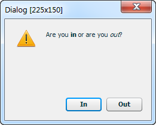
Prompt dialog
The Fireworks API offers a global prompt() function that lets the user enter some text. But the text input area is just a single line. The simple.prompt() method offers a multi-line text input area.
In addition to the properties listed above for confirm(), you can pass in a text string that sets the default text in the input area.
prompt() will return the entered string if the user presses the confirm button or presses return; otherwise, it returns null.
var result = simple.prompt({
message: 'Enter <b>something</b>!',
text: "change me"
});
if (result) {
alert("You entered: " + result);
}
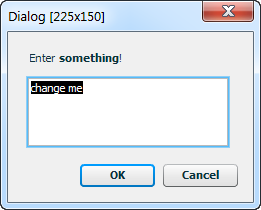
Form dialog
When you need to get just a few pieces of basic information from the user in a dialog, using the full power of JSML may be overkill. The simple.form() call lets you specify a UI using a simpler syntax.
In addition to the buttons and size properties described above, the object parameter to form() can contain these properties:
- title
- An optional string that appears in bold at the top of the dialog.
- items
- A required array of arrays, each of which defines a control in the form. The list of available controls is below.
Each control in the form is defined by an array, such as ["TextInput", "name", "Username"]. The first item in the array is always the type of the control, like "TextInput" or "ComboBox". The next item is the control's name property, which you can use to access its value in the result object that's returned when the user clicks OK. The third item is the label for the control, which appears to its left in the dialog. Most controls have an optional fourth item that specifies the default value for the control. The last item in the array is an optional object containing Flex properties that are added to the control. This can be used to further customize the control, though you'll need to look at the Flex documentation to see the list of available properties.
The following controls are supported. The array after each type name lists the pieces of data that should be included in the array for that type:
- Button [type, name, label, selected, config]
- Buttons in a form dialog are always treated as toggle buttons, so the
selecteditem in the array should be set totrueorfalse. - CheckBox [type, name, label, selected, config]
- The
selecteditem should betrueorfalseto indicate whether the checkbox is checked. The checkbox label appears to the left of the box, in the same column as the other form label. - ColorPicker [type, name, label, color, config]
- The default color specified in the
coloritem should be a CSS hex value, like"#ff0000". - ComboBox [type, name, label, dataProvider, config]
- The
dataProvideritem is an array of strings that specify the items in theComboBoxmenu. The last item in the array can be a number, which specifies which menu item is selected. Otherwise, it defaults to the first item. - DateField [type, name, label, date, config]
- The
dateitem should be the number of milliseconds representing the date. - FormHeading [type, name, label, config]
- The
labeltext appears bolded on a line by itself in the form. - Image [type, name, label, source, config]
- The
sourceitem specifies either a local path to the image or a URL. - List [type, name, label, dataProvider, config]
- The
dataProvideritem works the same as in theComboBoxcontrol. The list will have 4 rows by default. - NumericStepper [type, name, label, value, config]
- By default, the
stepSizefor theNumericStepperis 1. - PasswordInput [type, name, label, text, config]
- This is just a
TextInputcontrol with thedisplayAsPasswordproperty set to true, but having it available as a separate type makes it more convenient. - RadioButtonGroup [type, name, label, radioButtons, config]
- The
radioButtonsitem is an array of strings that specify the labels of the radio buttons in the group. The last item in the array can be a number, which specifies which menu item is selected. Otherwise, it defaults to the first item. - Slider [type, name, label, values, config]
- The
valuesitem is an array of numbers that specify the minimum, default, and maximum values for the slider. For instance, passing[-10, 0, 10]would create a slider that can go from -10 to 10, with the initial value set at 0. - Spacer [type, height, config]
- The
heightitem specifies the number of pixels of blank space that theSpacertakes up in the dialog. - Text [type, name, label, text, config]
- The
textitem specifies the string to show in the multiline, non-editable text field. - TextInput [type, name, label, text, config]
- The
textitem specifies a default string to show in the input field. - TextArea [type, name, label, text, config]
- The
textitem specifies a default string to show in the input field. - TileList [type, name, label, dataProvider, config]
- The
dataProvideritem works the same as in theComboBoxcontrol. - ToggleButtonBar [type, name, label, dataProvider, config]
- The
dataProvideritem works the same as in theComboBoxcontrol.
The return value of simple.form() is an object containing the current values of the controls, or null if the user clicked Cancel. The control values can be accessed via their names. For instance, in the following example, result.pass returns the string the user entered in the Password field.
var result = simple.form({
title: "Sign in to chat",
buttons: ["Sign In", "Cancel"],
items: [
["TextInput", "name", "Username"],
["PasswordInput", "pass", "Password"],
["ComboBox", "visibility", "Appearance", ["Visible", "Invisible", 1]]
]
});
if (result) {
alert("Your password is " + result.pass);
}
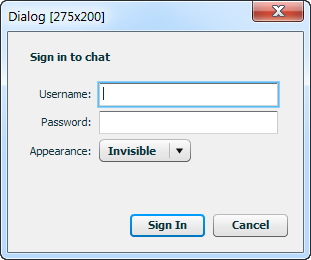
Using data providers
Many Flex components use a data provider to supply the attributes needed to render a set of controls. For instance, the ComboBox element uses a data provider to specify the items in the drop-down menu. This can be as simple as an array of strings, one for each item:
fwlib.panel.register({
children: [
{ ComboBox: {
dataProvider: [
"Fireworks",
"Edge",
"Illustrator",
"Photoshop"
]
} }
]
});
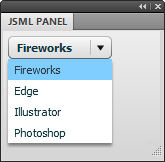
Typically, though, data provider arrays will include objects with multiple properties on each item:
fwlib.panel.register({
children: [
{ ComboBox: {
dataProvider: [
{ label: "Fireworks", data: "Fw" },
{ label: "Edge", data: "Eg" },
{ label: "Illustrator", data: "Ai" },
{ label: "Photoshop", data: "Ps" }
]
} }
]
});
The label attribute is used for the menu item's text, while the data attribute can be accessed when handling the change event for a ComboBox.
The List is another common element that uses a data provider to specify the list of items:
fwlib.panel.register({
children: [
{ List: {
dataProvider: [
{ label: "Fireworks", data: "Fw" },
{ label: "Edge", data: "Eg" },
{ label: "Illustrator", data: "Ai" },
{ label: "Photoshop", data: "Ps" }
],
rowCount: 3,
allowMultipleSelection: true,
percentWidth: 100
} }
]
});
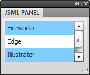
The dataProvider attribute of a control can be set at runtime to dynamically change the list of menu items. See the Updating the panel UI section for more details.
Using icons in data providers
While Button elements get their icons from a style, controls like ButtonBar and ToggleButtonBar are built from a data provider array. The array contains one object per button, and each object should have a label and an icon property. You can put the relative path to the image in the icon property. For example:
fwlib.panel.register({
children: [
{ ButtonBar: {
dataProvider: [
{
label: "Add",
icon: "JSML Panel/add-icon.png"
},
{
label: "Delete",
icon: "JSML Panel/delete-icon.png"
},
{
label: "Info",
icon: "JSML Panel/info-icon.png"
}
]
} }
]
});
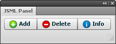
Another handy control that uses dataProviders to generate its contents is the TileList. It can display images in a scrolling table of rows and columns. While you may sometimes have a pre-defined set of images to show, more often you'll need to generate the list of images dynamically at runtime.
In the example below, the script scans the auto shapes folder for GIF and PNG images. When it finds one, it pushes a new item onto the dataProvider array containing the path to the image and its filename as a label. This array is then used as the dataProvider for the TileList, which will cause it to display each auto shape icon and label in a tile:
var autoShapeFiles = Files.enumFiles(fw.appSmartShapesDir);
var autoShapeDP = [];
for (var i = 0, len = autoShapeFiles.length; i < len; i++) {
var file = autoShapeFiles[i];
var extension = Files.getExtension(file);
if (extension == ".gif" || extension == ".png") {
autoShapeDP.push({
label: Files.getFilename(file).match(/(.+)\.[^.]+/)[1],
icon: file
});
}
}
fwlib.panel.register({
children: [
{ TileList: {
name: "AutoShapes",
columnWidth: 70,
rowHeight: 100,
rowCount: 2,
percentWidth: 100,
wordWrap: true,
dataProvider: autoShapeDP
} }
]
});
This produces an interface that looks very much like the Auto Shapes panel that ships with Fireworks:
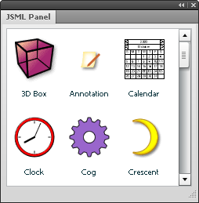
Note that the TileList element is created before the images are loaded, so Flex can't automatically size the tiles. Instead, you'll need to specify a columnWidth and rowHeight that will set the size of each tile. If that size is smaller than the image, the image will automatically be resized to fit.
Handling events
In a normal Flex application, you'd write event handlers in ActionScript. With the JSML library, however, you can write them in JavaScript. To create an event handler for an element, add an events: {...} property to it and add a function to events with the same name as the Flex event you want to handle. You can add as many event handlers as you like. For example:
fwlib.panel.register({
children: [
{ Button: {
label: "Click Me",
events: {
click: function(event)
{
alert("I've been clicked!");
}
}
} }
]
});
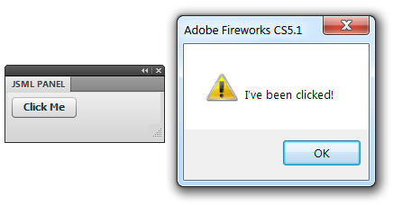
This displays an alert dialog every time you click the button. Note that the event handling function doesn't have to be written inline in the JSML object. You can also use a reference to a function defined somewhere else:
function onClick(event)
{
alert("I've been clicked!");
}
fwlib.panel.register({
children: [
{ Button: {
label: "Click Me",
events: {
click: onClick
}
} }
]
});
See the Flex 3 documentation for a list of the events that each element supports. You'll want to look at the list of inherited events to see the full set that each element supports. The click event for the Button control, for instance, is inherited from the base InteractiveObject class.
The event object
Each event handler is called with a single object that has the following common properties:
- type
- The name of the event that triggered the handler. In the example above,
event.typewould be"change". Knowing the event type can be useful if you're using the same handler to handle several different events. - targetName
- The name of the element that is handling the event. In the example above,
event.targetNamewould be"Foo". - originalTargetName
- The name of the element that fired the event. Normally, this is the same as
targetName, but if you are handling an event that has bubbled up to the top of the dialog,originalTargetNamelets you know where the event came from. - currentValues
- An object containing the current values of all the named elements in the panel. In the example above,
event.currentValues.Foowould be whatever the user had typed up to that point. Remember that if you want to be able to access an element's value in your event handler, you must give it a unique name. See the next section for more details.
itemClick events that are fired on controls derived from NavBar or Menu have these additional attributes:
- item
- The data provider object corresponding to the item that was clicked.
- index
- The index of the item that was clicked.
- label
- The label of the item that was clicked.
- result
- An empty array, which is used to update the Flex UI in response to an event. See Updating the panel UI for more details.
itemClick events that are fired on List, TileList or DataGrid controls include these attributes instead:
- columnIndex
- The zero-based index of the column associated with the event.
- rowIndex
- The zero-based index of the row associated with the event.
itemEditEnd events that are fired on DataGrid controls include these attributes:
- dataField
- The name of the field that is associated with the column in which the item editing has finished.
- itemData
- The data for the row in the
DataGridthat contains the cell that has been edited. This contains the new value that has been entered by the user. - reason
- A string containing the reason the edit session of the grid item was ended. It can be one of the following strings:
"canceled","newColumn","newRow", or"other".
Keyboard events include these attributes:
- altKey
- A Boolean representing the state of the alt key when the event was triggered.
- ctrlKey
- A Boolean representing the state of the ctrl key when the event was triggered.
- shiftKey
- A Boolean representing the state of the shift key when the event was triggered.
- charCode
- The ASCII character code of the key that was pressed or released.
- keyCode
- The numeric key code value of the physical key that was pressed or released.
Mouse events include these attributes:
- buttonDown
- A Boolean indicating whether the primary mouse button is pressed.
- localX
- The horizontal coordinate at which the event occurred relative to the element's container.
- localY
- The vertical coordinate at which the event occurred relative to the element's container.
- stageX
- The horizontal coordinate at which the event occurred in global coordinates.
- stageY
- The vertical coordinate at which the event occurred in global coordinates.
Accessing the current state of the Flex controls
When handling an event, you'll likely want to check the values of other elements in the panel or dialog interface. For instance, in the click handler for a button labeled Insert Text, you might want to access the value of a text field and then use that string to insert a block of text. You can do this by looking up an element's value in the currentValues object by its ID.
Note that the value property of most controls will be a string, number or Boolean, but some classes have other value types:
- Button
valueis a Boolean indicating whether the button is toggled on or not. This applies only to buttons whosetoggleproperty istrue.- ColorPicker
valueis a string containing a CSS color, like"#ff0000".- ComboBox
-
valueis an object containing the following properties:- selectedIndex
- The index of the first selected item.
- selectedItem
- The
dataProviderobject corresponding to the selected item.
- DateField, DateChooser
valueis a JavaScriptDateobject ornullif the user hasn't entered anything. Note that to specify the initial date via the element'sselectedDateproperty, you must use milliseconds rather than aDateobject. To set it to the current day, for instance, you could useselectedDate: new Date().getTime()to get the current time and date in milliseconds.- List, TileList
-
valueis an object containing the following properties:- selectedIndex
- The index of the first selected item.
- selectedIndices
- An array of indices, if the list's
allowMultipleSelectionproperty is true. - selectedItems
- An array of the
dataProviderobjects corresponding to the selected items.
Responding to events
Typically, you'll want to change the state of the Fireworks document when the user interacts with your panel, such as by clicking a button. In your event handler, you have the full Fireworks API at your disposal. One of the major advantages of the JSML library over creating a panel or dialog in Flash is that instead of concatenating a long string of JavaScript code in ActionScript to pass to the MMExecute() function, you don't have to worry about escaping your code at all, since you're writing regular JS, not AS. Just write it as you would any other Fireworks command.
In the following example, clicking the Move button moves the current selection by the amount specified in the NumericStepper fields:
fwlib.panel.register({
children: [
{ HBox: {
children: [
{ Label: {
text: "X:"
} },
{ NumericStepper: {
name: "XValue",
value: 10,
stepSize: 1,
maximum: 100000,
minimum: -100000,
toolTip: "Pixels to move horizontally"
} }
]
} },
{ HBox: {
children: [
{ Label: {
text: "Y:"
} },
{ NumericStepper: {
name: "YValue",
value: 10,
stepSize: 1,
maximum: 100000,
minimum: -100000,
toolTip: "Pixels to move vertically"
} }
]
} },
{ Button: {
label: "Move",
events: {
click: function(event)
{
fw.getDocumentDOM().moveSelectionBy(
{ x: event.currentValues.XValue,
y: event.currentValues.YValue },
false,
false
);
}
}
} }
]
});
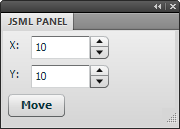
Handling bubbled events
Events in Flex typically bubble up from the element that generated the event to its parents in the UI hierarchy, and all the way to the top of the application. It's possible to add handlers to the JSML's events object to catch these bubbled events:
fwlib.panel.register({
events: {
keyDown: function(event)
{
alert("You pressed '" +
String.fromCharCode(event.charCode) + "'");
}
},
children: [
{ TextInput: {
name: "Input",
restrict: "0-9"
} }
]
});
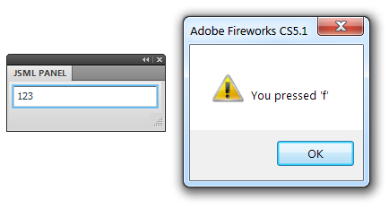
In the example above, clicking in the text field and then pressing a key will display the key's character code in an alert dialog. Note that the TextInput element is restricted to showing numbers only, but pressing a letter key will still display that letter. The keyDown event bubbles up to the panel's handler, even though the text field doesn't show the letter.
Global event handlers can be useful for responding to events in the same way no matter which element in the interface triggered them. For instance, you might have a keyDown handler that checks for the return key being pressed, and then execute some default action. That code can be in just one place instead of being added to each control.
Handling events in dialogs
Due to an obscure but highly annoying bug in versions of Fireworks before CS6, handling events in a dialog is more limited than it is in a panel. If the event handler uses a loop statement or calls a JavaScript function that returns a value (not returning anything seems to be okay), a modal "Processing command script" dialog will appear on top of the dialog. You're basically hosed at this point, since clicking Cancel in the dialog does nothing. You just have to kill Fireworks. (This bug is why you have to set the result property on the event object to specify the statements, rather than just returning them from the event handler.)
To reduce the annoyance of this bug in pre-CS6 versions, the dialog API starts a timer when an event is handled by your code. If the dialog doesn't receive any UI events (mouseMove, keyDown, click, etc.) within 15 seconds of calling the event handler, then it will automatically close the dialog. That way, you and the users of your extension don't lose any work.
However, some users may be surprised if the dialog closes by itself. So if you're confident your event handlers won't trigger the processing dialog bug, you can set useDeadManSwitch to false in the JSML. This will cause the timer not to start when an event is handled. You should probably also set this value if your extension is limited to Fireworks CS6 and newer, since the bug has been fixed in those versions.
Another result of this bug is that including objects in the event.result property, as described below, will fail in pre-CS6 versions of Fireworks. For instance, you might want to set the dataProvider of a ComboBox or List element to an array of objects, each with a label property. In CS6, the JSML dialog library will convert the result array to a string using a JSON library, which will quote the property names of each object. The JSON string is then converted back to an object on the ActionScript side. In Fireworks pre-CS6, however, calling the JSON library would trigger the processing dialog bug, so the event result is converted to a string using the built-in toSource() method. Unfortunately, that method doesn't quote object properties, so the JSON decoder in the Flex dialog will reject the string as syntactically incorrect.
Updating the UI
Getting the Flex panel or dialog to update in response to one of these events is tricky, since the Flash player doesn't include an ActionScript compiler and therefore has no way to run an arbitrary block of AS at runtime. But the JSML library does provide a poor-man's form of scripting: by pushing "statements" onto the event.result array, you can modify elements in the UI.
Each statement is an array of at least two strings. The first is the name of the element to affect. The second is the name of the element's property to set or its method to call. The third item, if any, is the value to set the property to or the first parameter of the method call. Any remaining items in the array will also be passed as parameters, but will be ignored if the second parameter is a property.
An example will hopefully make all this a little clearer. The following code echoes the text from the Foo input field to the FooEcho field whenever Foo changes:
fwlib.panel.register({
children: [
{ TextInput: {
name: "Foo",
events: {
change: function(event)
{
event.result.push(["FooEcho", "text",
event.currentValues.Foo]);
}
}
} },
{ TextInput: {
name: "FooEcho",
editable: false
} }
]
});
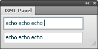
The array ["FooEcho", "text", event.currentValues.Foo] is equivalent to the ActionScript statement FooEcho.text = event.currentValues.Foo.
You can also push multiple arrays onto the event's result property, in order to execute a series of statements.
fwlib.panel.register({
children: [
{ TextInput: {
name: "Equation",
_focused: true,
events: {
change: function(event)
{
var equation = event.currentValues.Equation;
try {
event.result.push(
["Result", "text", equation ?
eval(equation) : ""],
["Equation", "setStyle",
"backgroundColor", 0xffffff]
);
} catch (e) {
event.result.push(
["Result", "text", ""],
["Equation", "setStyle",
"backgroundColor", 0xffaaaa]
);
}
}
}
} },
{ TextInput: {
name: "Result",
editable: false
} }
]
});
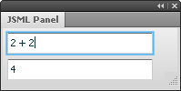
In the example above, every time the Equation element changes, its text value is evaluated. If the string throws an exception when eval'd, the Result element is cleared and the background color of the Equation field is set to red. Otherwise, the result of the eval is displayed in Result and the Equation background is set to white. Note that setStyle is a method, so the equivalent ActionScript looks like Equation.setStyle("backgroundColor", 0xffaaaa).
Although the syntax is a little awkward, using these statement arrays in an event handler does give you a fair degree of control over the state of the panel elements. For example, you can use the statements to enable or disable certain controls when the user clicks a radio button, change the color of an element when they move a slider, and so on. Remember that any element you want to be able to manipulate with these statements must have a unique name value. Static elements like HRule or VBox generally don't need to be named.
Rather than doing all the event handling in the function specified in the events object, you may want to call other functions, which in turn may need to update the Flex UI. Just pass the event object received by the handler to the other functions so that they can push their statements onto the result array:
fwlib.panel.register({
children: [
{ Button: {
name: "SaveButton",
label: "Save",
events: {
click: function(event)
{
updateItemList(event);
updateButtonState(event);
}
}
} }
]
});
JSML-specific methods
In addition to the methods defined in the Flex docs, some elements have JSML-specific methods to make it possible to use them without having access to ActionScript.
- setButtonEnabled(buttonIndex, enabled)
- Enables or disables individual buttons in
ButtonBarandToggleButtonBarelements. To disable the third button on aButtonBarcalledtoolbar, you could set the result to a statement like["toolbar", "setButtonEnabled", 2, false]. - setSelectedIndex(index)
- Sets the selected menu item in
PopUpMenuButtonelements. - preventDefault
-
Flex events have a
preventDefault()method that you can call to stop the event's default action from happening. For instance, the following code would prevent newlines from being entered in aTextAreaelement unless shift-enter was pressed:{ TextArea: { name: "Input", events: { keyDown: function(inEvent) { if (inEvent.keyCode == 13 && !inEvent.shiftKey) { inEvent.result.push(["preventDefault"]); } } } } }This is the only single-word statement.
- close(ok)
- In a JSML dialog, setting the result to
["close", "true"]would make the dialog close as if the OK button was pressed. Passing"false"instead emulates clicking the Cancel button. Setting this result in a panel has no effect.
Handling Fireworks events
In addition to the events generated when the user interacts with the Flex controls, Fireworks itself fires events to panels when the state of the application changes. For instance, it generates an event when the selection changes, when the current document changes, when the zoom level changes, and so on. These events are emitted only to panels, not dialogs.
The following Fireworks events are supported:
onFwActiveDocumentChange onFwDocumentClosed onFwPixelSelectionChange onFwActiveSelectionChange onFwDocumentNameChange onFwPreferencesChange onFwActiveToolChange onFwDocumentOpen onFwStartMovie onFwActiveToolParamsChange onFwDocumentSave onFwStopMovie onFwActiveViewChange onFwDocumentSizeChange onFwSymbolLibraryChange onFwApplicationActivate onFwFavoritesChange onFwUnitsChange onFwApplicationDeactivate onFwHistoryChange onFwURLListChange onFwCurrentFrameChange onFwObjectSettingChange onFwZoomChange onFwCurrentLayerChange
The Cross Products Extensions > Flash Panels > Events section of the Extending Adobe Fireworks CS5 documentation describes the trigger for each of these events.
To handle one of these Fireworks events, add an events: {...} property to the top level of the panel object. For each event you want to handle, add a function to events with the same name as the event. You can add as many event handlers as you like.
In this example, the panel updates a label every time the user switches to a different tool in the toolbox:
fwlib.panel.register({
events: {
onFwActiveToolChange: function(event)
{
event.result = ["ToolName", "text", fw.activeTool];
}
},
children: [
{ Label: {
name: "ToolName",
text: fw.activeTool
} }
]
});
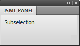
Your event handler is called with a single object that has the following properties:
- type
- The name of the event that triggered the handler. In the example above,
event.typewould be "onFwActiveToolChange". - currentValues
- An object containing the current values of all the named elements in the panel.
Unlike Flex events, there is no targetName property in this object, since Fireworks is generating the event, not a Flex element.
One of the challenges with writing panels in Fireworks is that it often generates a large number of events, which can slow the application down. When the user edits text, for instance, Fireworks generates onFwActiveToolChange events constantly. For that reason, your panel will not receive any events while the text tool is selected in the toolbox (even if the user is not currently editing text). So in the example above, you won't see the panel display "Text" as the current tool.
An event you'll often want to handle is onFwStartMovie, which is called when the panel is first loaded. You can handle this event to initialize the state of the panel's controls by returning statements in the event's result property.
Another common event is onFwActiveSelectionChange, which fires when the selection changes. You can use this to update the panel to show information about the selection, such as its position or size. Unfortunately, this event isn't generated every time you might need to update your panel. For instance, it doesn't fire when the user switches to a different document, even though the current selection they're working with has changed. Nor does it fire when the user uses the arrow keys to move the selection around, even though its position has changed.
To work around this, you may want to handle multiple events using the same function. In the following example, one function is used to handle 4 events by specifying the same function multiple times in the panel's events property. The onSelectionChange function displays the selection's current position in a Label element:
function onSelectionChange(event)
{
var dom = fw.getDocumentDOM();
if (dom && fw.selection.length) {
var bounds = dom.getSelectionBounds();
event.result = ["Position", "text",
"Position: " + bounds.left + ", " + bounds.top];
} else {
event.result = ["Position", "text",
"Nothing is selected"];
}
}
fwlib.panel.register({
events: {
onFwStartMovie: onSelectionChange,
onFwActiveSelectionChange: onSelectionChange,
onFwObjectSettingChange: onSelectionChange,
onFwActiveDocumentChange: onSelectionChange
},
children: [
{ Label: {
name: "Position"
} }
]
});
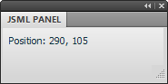
When the panel is opened and it receives onFwStartMovie, it immediately calls onSelectionChange to update the panel with the position of the current selection, if any. It also updates the panel when the selection changes (onFwActiveSelectionChange), when it's moved via the keyboard (onFwObjectSettingChange) or when it changes because the user's switched to a different document (onFwActiveDocumentChange).
Building up more complex user interfaces
Just like in HTML, the elements in your panel or dialog will get nested deeper and deeper as the interface grows in complexity, which can make managing the markup difficult. Unlike HTML, however, JSML is pure JavaScript, so you can easily use variables and loops to build up parts of the UI independently, and then combine them in a larger object. You can also write functions to programmatically create JSML objects.
For example, if you use a TabNavigator element to create an interface with 3 tabs, the JSML might look something like this:
fwlib.panel.register({
children: [
{ TabNavigator: {
children: [
{ VBox: {
children: [
...
]
} },
{ VBox: {
children: [
...
]
} },
{ VBox: {
children: [
...
]
} }
]
} }
]
});
Each of the VBox elements will have its own children as well, so the hierarchy can get quite deep. An alternative would be to build up the tabs individually by assigning them to variables and then later combining them:
var tab1 = { VBox: {
children: [
...
]
} };
var tab2 = { VBox: {
children: [
...
]
} };
var tab3 = { VBox: {
children: [
...
]
} };
fwlib.panel.register({
children: [
{ TabNavigator: {
children: [
tab1,
tab2,
tab3
]
} }
]
});
This approach makes it easier to manage deeply nested hierarchies of components.
Another handy technique is to generate the component objects using functions. In the example below, the labeledStepper() function returns an object that specifies an HBox containing a Label and a NumericStepper. The stepper control's name and default value are passed in as parameters. The function uses the inName string parameter to create the label and to set the control's name and toolTip properties. Then all you have to do to create one of these units is make a call to the function, like labeledStepper("X", 10):
function labeledStepper(
inName,
inValue)
{
return { HBox: {
children: [
{ Label: {
text: inName + ":"
} },
{ NumericStepper: {
name: inName + "Value",
value: inValue,
stepSize: 1,
maximum: 1000,
minimum: -1000,
toolTip: "Pixels to move in " + inName
} }
]
} };
}
fwlib.panel.register({
children: [
labeledStepper("X", 10),
labeledStepper("Y", 20),
labeledStepper("Z", 30)
]
});
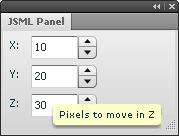
In addition to making the code more compact, centralizing the creation of components in functions makes it easier to change a bunch of elements at once. If you wanted to change the step size of the NumericStepper elements in the example above, you could edit the function in just one place, rather than changing three separate instances of the control.
Technical details
It's not important to know the technical details of how all this works in order to use the JSML library, but for the curious, here's a basic outline. The panel and dialog versions of the JSML library both use the same syntax, but the handoff of control between JavaScript and ActionScript is reversed, as you'll see below.
When your copy of the JSML Panel.swf file is started, it loads the fwlib.panel API into the global JavaScript environment. It then looks for a .js file with the same name as the SWF (JSML Panel.js, in this case) and calls fw.runScript() on it.
When you pass a JavaScript object to fwlib.panel.register() in your .js file, it associates that object with the SWF file. The SWF calls back to get the object you specified as a JSON string, which it then uses to render the panel (the JS event handlers are stripped out and stored before the object is converted to JSON). The process is basically similar to what the Flex compiler does: a source document (MXML in the normal Flex case, JSML here) is parsed, and then a tree of UIComponentDescriptor objects corresponding to the source document is generated. Normally the code to instantiate UIComponentDescriptor objects is generated automatically by the Flex compiler, but they can also be created programmatically at runtime. Once they are, createComponentFromDescriptor() is called on the Application object to instantiate each Flex UI object (Button, NumericStepper, etc.), and then validateNow() is called to display the elements onscreen.
While the panel is open, Flex handles the user interaction. If you had created any event handlers for your panel, the JS functions are stripped out of the JSML, since they can't run in the Flash player. Instead, when an event is supposed to be handled, the AS3 code calls back to fwlib.panel and the JS code dispatches the event to your handler. If the handler adds to the result array on the event object, that result is converted to JSON and returned to the AS3 code. The "statements" in the result array are then interpreted and applied to the Flex elements in the panel.
In the case of a dialog, the control goes in the opposite direction. Your JS code first makes sure the require() call is available. Then it calls require() to load the dialog module and finally calls dialog.open() with a JSML object. The dialog API converts your object to JSON and then calls runScript() on the SWF that corresponds to the requested size, e.g. Dialog [250x150].swf. These SWFs are just barebones classes that load another file, JSMLDialog.swf, which contains all the AS3 code. They also specify the size of the dialog in their metadata. This way, each "Dialog" SWF is just 875 bytes, instead of the full 411K of JSMLDialog.swf.
Once it's loaded, the dialog works similarly to the panel, in that event handling is done on the JS side and changes to the dialog UI are passed back via the event.result array.
Enabling images to be dynamically loaded was a huge pain, since Flex tends to want to build image assets into the SWF and create a separate class for each one. Getting the TileListItemRenderer and ListItemRenderer classes to support dynamic images required some monkey-patching of the Flex source.
Release history
- 1.0.1
- 2013-01-06: Minor improvements to the
simple.form()call. Some additional properties are passed in with Flex events. - 1.0.0
- 2012-07-08: Brought all the capabilities of JSML panels to dialogs, and combined them into a single extension. Moved to using FWRequireJS to load the dialog library files. Added a simple dialog API. Added support for PopUpButton and PopUpMenuButton.
- 0.2.1
- 2012-05-10: Minor fix to remove the log() call.
- 0.2.0
- 2012-03-22: Added support for dynamically loaded images and DataGrids. Numerous small improvements. Thoroughly updated documentation.
- 0.1.1
- Added support for Canvas elements. Added error handling for JS files. Added example panel that demonstrates some advanced approaches to building panels.
- 0.1.0
- 2009-09-14: Initial release.
Package contents
- JSML Panel
- Complex Example
- Confirm Example
- Form Example
- Move Selection
- Prompt Example
- Simple Example
- Dialog [225x125]
- Dialog [225x150]
- Dialog [225x175]
- Dialog [225x200]
- Dialog [225x225]
- Dialog [250x125]
- Dialog [250x150]
- Dialog [250x175]
- Dialog [250x200]
- Dialog [250x250]
- Dialog [275x175]
- Dialog [275x200]
- Dialog [275x250]
- Dialog [275x275]
- Dialog [300x175]
- Dialog [300x200]
- Dialog [300x250]
- Dialog [300x275]
- Dialog [300x300]
- Dialog [300x325]
- Dialog [300x350]
- Dialog [300x375]
- Dialog [350x250]
- Dialog [350x300]
- Dialog [350x325]
- Dialog [350x350]
- Dialog [350x375]
- Dialog [375x250]
- Dialog [375x300]
- Dialog [375x325]
- Dialog [375x350]
- Dialog [375x375]
- Dialog [400x275]
- Dialog [400x300]
- Dialog [400x350]
- Dialog [400x375]
- Dialog [450x275]
- Dialog [450x300]
- Dialog [450x350]
- Dialog [450x375]
- Dialog [500x375]
- JSMLDialog